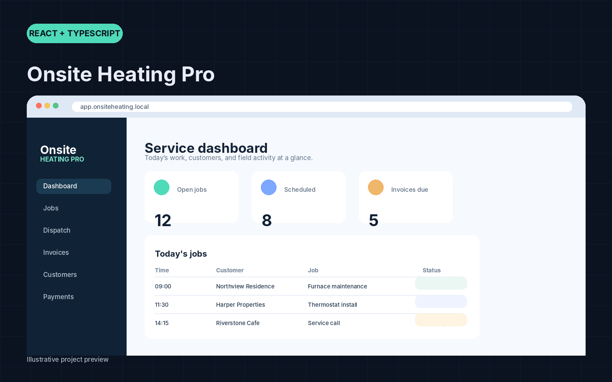

PROJECT / 01
Onsite Heating Pro
A local-first HVAC field-service app for jobs, dispatch, invoices, payments, and repeat-visit records.
Built around real HVAC workflows, with multi-role screens, job status updates, notes, invoices, and browser-based local persistence.
Open GitHub repository